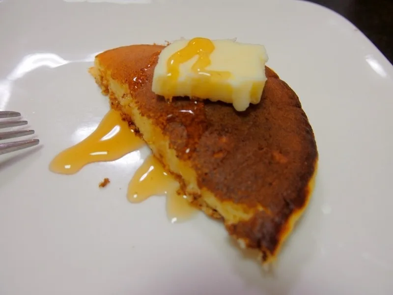
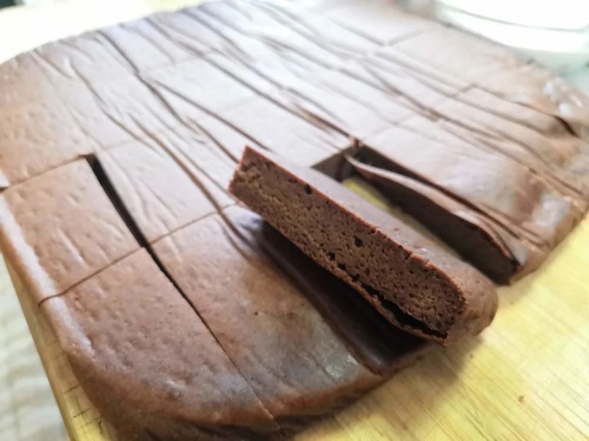
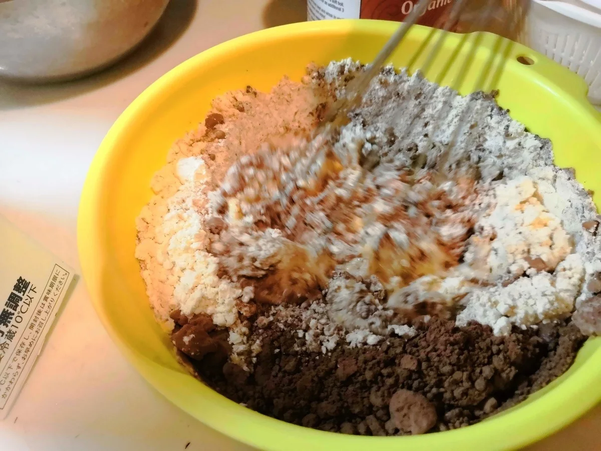

パンケーキ・おやつ
おからパウダーのミニパンケーキ
小さく焼いて楽しむ、おからパウダーのミニパンケーキです。私はこの生地を、ジャムやバターと合わせたり、あんこを挟んだりする食べ方も紹介してきま
ピュアココアで味をつけ、天板に流して焼くチョコケーキです。ココアは先ほどの蒸しケーキが20g、こちらが30gなので、材料表を分けて見てください。


元記事では、焼きたてだけでなく、冷めてから、冷やしてから食べると味が落ち着くと紹介しています。熱いうちに急いで切らず、冷ましてから切り分けてもかまいません。
おからの風味にココアを合わせたい方は、まず何も添えずに味を見てください。
好みで、食べる分にバニラアイスや苺を添えても楽しめます。トッピングの分量は指定されていないので、ケーキ本体8食分とは分けて考えましょう。
天板の寸法は指定されていないので、焼き時間は目安です。火の通りは生地の厚みや機器によって変わるため、確かめながら焼いてください。
元記事にはプロテインなどを加える提案もありますが、追加量は示されていません。ここでは、基本の配合にとどめています。
加熱時間は作った時の目安です。容器や調理器具によって仕上がりは変わります。中心まで火が通っていることを確認してください。
おからパウダーのチョコケーキの材料・作り方（50kgdiet.com） →
このページは書籍の改訂原稿をもとに掲載しています。元記事は過去の記録のため、材料や表現が異なる場合があります。